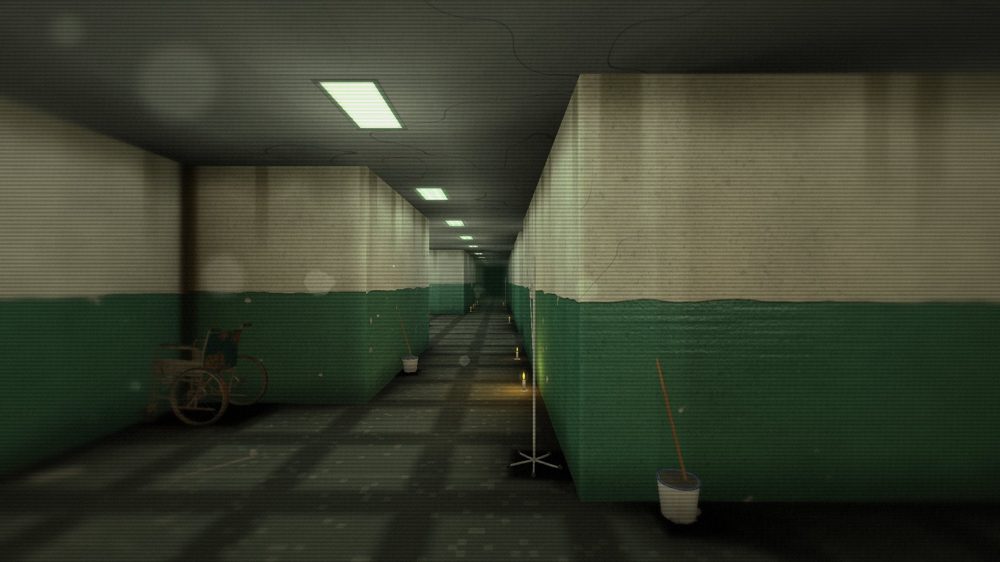
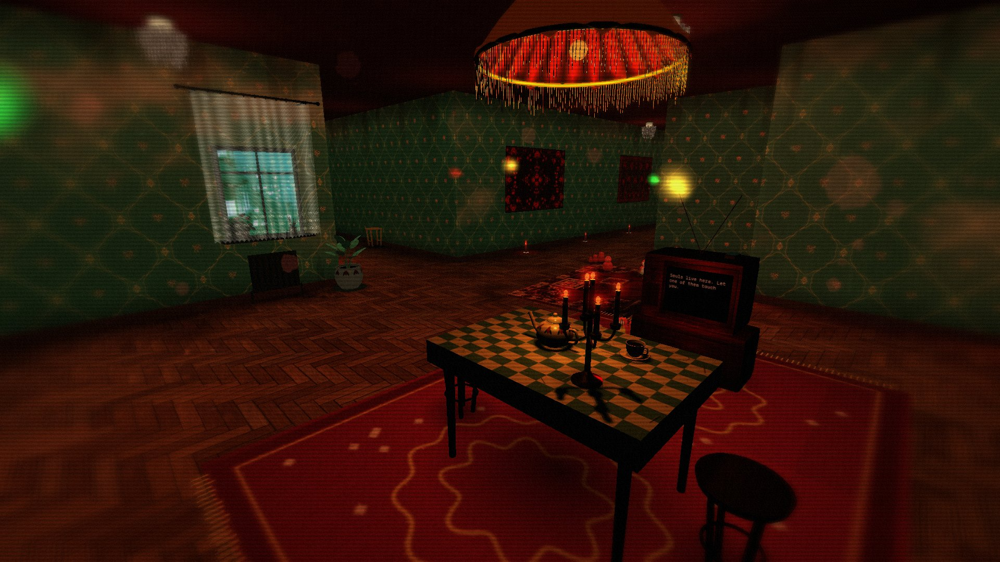
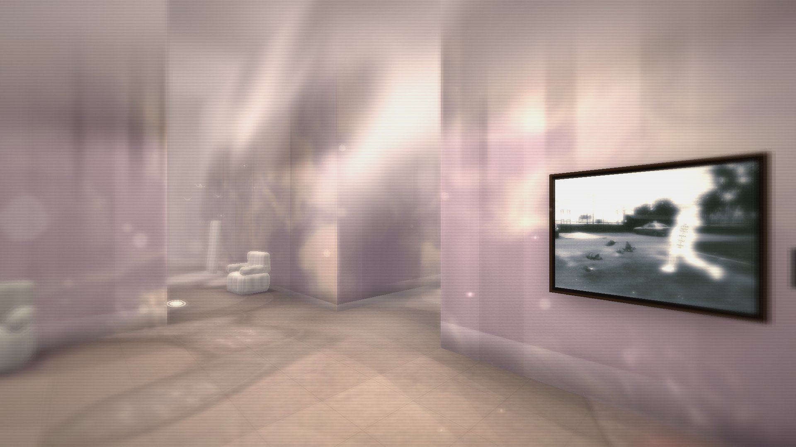
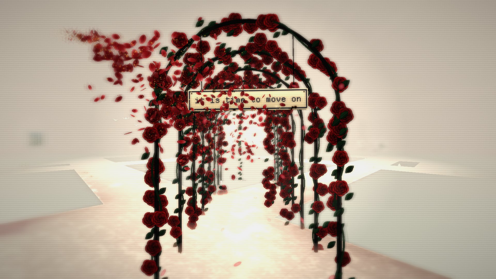
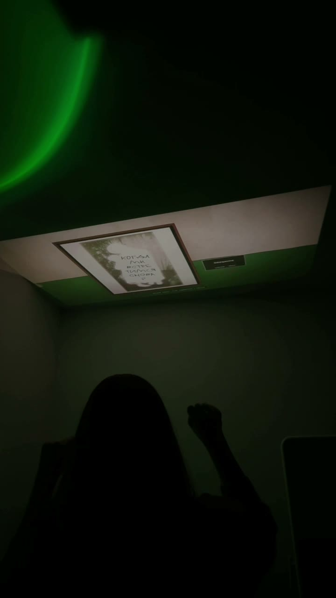
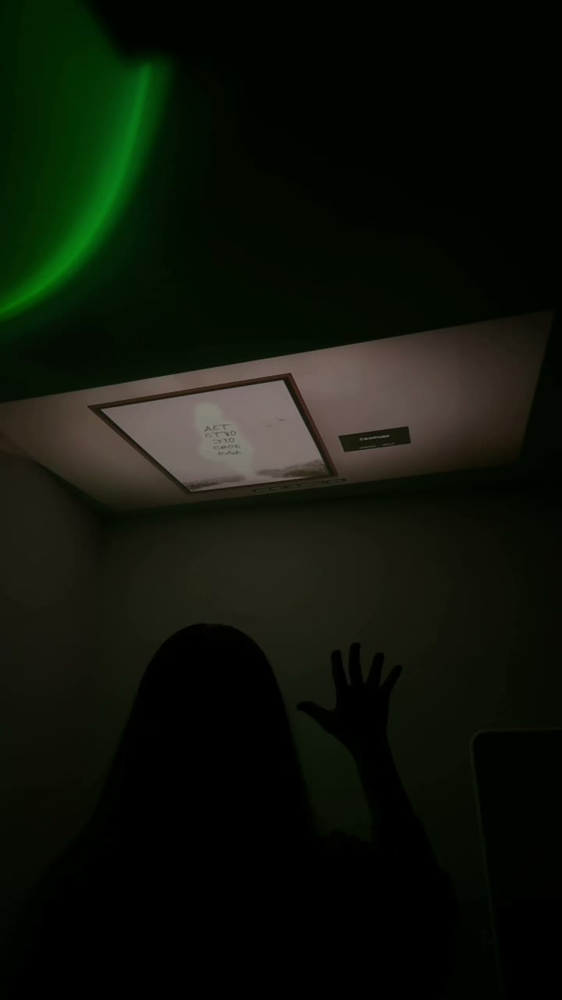

CONSPACE ROOMS: для прессы
Обновлено 5 октября 2026
Коротко
- Название
- CONSPACE ROOMS
- Год
- 2026
- Авторы
- Sinaida Krivchenko (идея, дизайн опыта, код), UVALISS (Алиса Феер), работы серии SOULS
- Формат
- веб-работа в браузере и инсталляция с управлением жестами
- Где
- conspace-rooms.vercel.app, бесплатно, RU / EN, компьютер и телефон
- Приватность
- без аналитики и аккаунтов, изображение с камеры не покидает устройство
- Визит
- около 10 минут, от 6 до 15
- За час
- в галерее около 5 ведущих и 25–30 зрителей
- Зрители
- один ведёт, 4–6 смотрят рядом; 16+
- Каждый раз
- новый лабиринт: он строится из времени входа, до секунды
- Языки
- интерфейс и субтитры RU / EN; тексты на стенах и табличка с предупреждением переводятся на местный язык
- Зал
- от 4×5 м, потолок от 3 м, полное затемнение; второй зал для работ
- Монтаж
- 2–3 дня, демонтаж 1 день
- Условия
- гонорар и даты по запросу, подробности в райдере
Описание в одну строку
Лабиринт полутёмных комнат в браузере, где висят восемнадцать работ UVALISS из серии SOULS: найди все, и арка из роз тебя выпустит.
Короткое описание
CONSPACE ROOMS: прогулка по лабиринту, который браузер строит заново для каждого гостя. Больничные коридоры страха, бабушкина квартира с коврами на стенах, бледные комнаты, растворяющиеся в кружеве и свете. Восемнадцать работ UVALISS висят там, куда их положили коридоры, поэтому каждый встречает их в своём порядке. Музыка генерируется во время ходьбы и не повторяется. Работа открывается на компьютере и телефоне, а в галерее ей управляют жестами рук.
Длинное описание
UVALISS посвятила серию SOULS тому, как заглянуть в свой внутренний мир и принять его таким, какой он есть. CONSPACE ROOMS проходит тот же путь пространством. Сначала больничные коридоры: зелёная масляная краска под побелкой, гудящие лампы, брошенные койки и капельницы. Потом бабушкина квартира: обои с розетками, ковры на стенах, включённый телевизор в пустой комнате, пластинки за стеной. Дальше светлые комнаты, где стены распадаются на кружево.
Карты и указателей нет. Путь подсказывают свечи, редкая дверь поддаётся, если постоять перед ней, каждая работа звучит своей нотой. Роза в углу экрана растёт с каждой встреченной работой; когда встречены все восемнадцать, открывается арка из роз и карточка с вопросами, которые души задавали по дороге.
Лабиринт строится из времени входа, до секунды, поэтому два посещения почти никогда не совпадают. Работа ничего не собирает о зрителе. В галерее она становится инсталляцией: проекция, веб-камера и один гость, который ведёт прогулку жестами обеих рук.
Кураторский текст
CONSPACE ROOMS делает браузер выставочным пространством, а галерею порогом в него. Восемнадцать картин UVALISS из серии SOULS висят в лабиринте, который перестраивается с точностью до секунды прихода каждого гостя. Сама развеска становится генеративной: два зрителя почти никогда не встречают работы в одном порядке и при одном свете.
Лабиринт выбран как форма. Сетка дала бы обзор, последовательность задала бы порядок чтения; лабиринт не даёт ни того ни другого, и гость ориентируется по памяти, звуку и свету. Карты и указателей нет. Их заменяют свечи, нота, которой звучит каждая картина, и дверь, которая открывается только тому, кто постоит перед ней. Работа просит у гостя внимания и терпения.
Комнаты собраны из воспоминаний, общих для двух художниц: больничные коридоры в зелёной масляной краске и бабушкина квартира с коврами на стенах. Музыку пишет код во время ходьбы, поэтому её темп задаёт гость. Приватность входит в позицию работы: ничего не записывается, изображение с камеры остаётся на устройстве, и работа не хранит следов тех, кто по ней прошёл.
Кадры
Можно публиковать в материалах о работе с указанием авторов. Все кадры из игры сняты в реальном времени, это не визуализации. Нажмите на кадр, чтобы скачать его в полном размере.












Видео
Нажимая play, вы уходите с этого сайта. Видео показывает YouTube (Google), он может ставить свои cookie.
Доступность
- Управлять можно клавиатурой, мышью, касанием, геймпадом или руками перед веб-камерой.
- Субтитры для звуков.
- Мерцание и глитч настраиваются в меню.
- Кнопка «Завершить» всегда на экране.
- Перед входом предупреждение о содержании; в райдере для галерей есть точный текст таблички.
- В галерее камера видит руки сидящего человека, поэтому зона жестов доступна с инвалидной коляски.
Ограничения: нет пути для скринридера и нет аудиодескрипции, движение от первого лица у некоторых вызывает головокружение, для жестов нужны обе руки.
Приватность и ИИ
Ни аналитики, ни аккаунтов, ни трекеров. Браузер хранит на устройстве три настройки: качество графики, громкость и отметку о прочитанном предупреждении. В режиме жестов изображение с камеры обрабатывается на устройстве, никуда не передаётся и не записывается. Работа не собирает персональных данных, поэтому площадке нечего обрабатывать или хранить по GDPR. Видео на этой странице загружается с YouTube только после нажатия play. Подробно: политика приватности.
Что как сделано. Картины SOULS UVALISS пишет руками. Лабиринт, стены, свет, мебель, розы и музыку Sinaida написала кодом, и они рождаются заново во время прогулки. Виды из окон, лестничные пролёты и большую часть ковров Sinaida сделала в Midjourney. Руки отслеживает модель MediaPipe прямо на устройстве. Код Sinaida писала с помощью ИИ-ассистента.
Логотип
Надпись CONSPACE ROOMS, PNG 3072×384. Шрифт: Departure Mono (SIL OFL). Фон #010805.

Титры
«CONSPACE ROOMS, 2026. Интерактивная проекция. Идея, дизайн опыта и код: Sinaida Krivchenko. Работы серии SOULS © UVALISS (Алиса Феер)».
Контакты
Sinaida: sinaida.eu/#contact · @sin.ai.da
UVALISS: uvaliss.ru/contacts · @uvaliss
Для галерей: райдер с техническими условиями.
← назад в CONSPACE ROOMSCONSPACE ROOMS: press kit
Updated 5 October 2026
At a glance
- Title
- CONSPACE ROOMS
- Year
- 2026
- Artists
- Sinaida Krivchenko (concept, experience design, code), UVALISS (Alisa Feer), works from the SOULS series
- Format
- a browser piece and a gesture-controlled installation
- Where
- conspace-rooms.vercel.app, free, RU / EN, desktop and phone
- Privacy
- no analytics, no accounts, the camera image never leaves the device
- Visit
- about 10 minutes, from 6 to 15
- Per hour
- in a gallery, about 5 people steer and 25–30 watch
- Audience
- one person steers, 4–6 watch nearby; 16+
- Every visit
- a new labyrinth, built from the moment of entry to the second
- Languages
- interface and subtitles in RU / EN; wall texts and the warning sign translate into the local language
- Space
- a projection room from 4×5 m, ceiling from 3 m, full blackout; a second room for the works
- Setup
- 2–3 days, dismantling 1 day
- Terms
- fee and dates on request, details in the rider
One line
A labyrinth of half-lit rooms in the browser where eighteen works from the SOULS series by UVALISS hang: find them all and an arch of roses lets you out.
Short description
CONSPACE ROOMS is a walk through a labyrinth the browser builds anew for every visitor. Hospital corridors of fear, a grandmother’s flat with rugs on the walls, pale rooms dissolving into lace and light. Eighteen works by UVALISS hang wherever the corridors put them, so everyone meets them in their own order. The music is generated as you walk and never repeats. The piece runs on a computer or a phone; in a gallery, visitors steer it with their hands.
Long description
SOULS is a series by UVALISS about looking into your own inner world and accepting it as it is. CONSPACE ROOMS walks the same road through space. First the hospital corridors: green oil paint under whitewash, humming tubes, abandoned beds and drip stands. Then a grandmother’s flat: rosette wallpaper, rugs on the walls, a television left on in an empty room, records playing through the wall. Then pale rooms where the walls come apart into lace.
There is no map and no signage. Candles show the way, a rare door gives way if you stand in front of it, and every work hums its own note. A rose in the corner of the screen grows with each work you meet; once all eighteen are found, an arch of roses opens onto a card of the questions the souls asked along the way.
The labyrinth is built from the moment you enter, to the second, so two visits almost never match. The piece keeps nothing about its visitors. In a gallery it becomes an installation: a projection, a webcam, and one visitor who steers the walk with both hands.
Curatorial statement
CONSPACE ROOMS treats the browser as an exhibition space and the gallery as a threshold into it. Eighteen paintings from the SOULS series by UVALISS hang in a labyrinth rebuilt from the second each visitor arrives. The hang itself becomes generative: two viewers almost never meet the works in the same order or the same light.
The labyrinth is a formal choice. A grid would give an overview and a sequence would fix a reading; a labyrinth withholds both, so the visitor finds the way by memory, sound and light. There is no map and no signage. Candles, the note each painting hums and a door that opens only for someone who stands still take the place of wayfinding. The piece asks the visitor for attention and patience.
The rooms come from memories the two artists share: hospital corridors in green oil paint and a grandmother’s flat with rugs on the walls. The music is composed by code as one walks, so its tempo belongs to the visitor. Privacy is part of the work’s position: nothing is recorded, the camera image stays on the device, and the piece keeps no trace of who walked through it.
Stills
Free to publish in coverage of the piece, with credit. Every game still is a real-time render, not a visualisation. Click a still to download it at full size.
Video
Pressing play leaves this site. The video is played by YouTube (Google), which may set its own cookies.
Access
- Steer with a keyboard, a mouse, touch, a game controller or bare hands in front of a webcam.
- Subtitles for the sounds.
- Flicker and glitch are adjustable in the menu.
- The Finish button is always on screen.
- A content warning before entry; the rider gives galleries the exact text of the warning sign.
- In a gallery the camera sees seated hands, so the gesture zone works from a wheelchair.
Limits: there is no screen-reader path and no audio description, first-person movement makes some people dizzy, and gesture mode needs both hands.
Privacy and AI
No analytics, no accounts, no trackers. The browser keeps three settings on the device: graphics quality, volume and a note that the warning was read. In gesture mode the camera image is processed on the device and is never sent or recorded. The piece collects no personal data, so a venue has nothing to process or store under the GDPR. The video on this page loads from YouTube only after you press play. Details: privacy policy.
What is made how. UVALISS paints the SOULS works by hand. Sinaida wrote the labyrinth, walls, light, furniture, roses and music in code, and they are generated anew while you walk. Sinaida made the window views, the stairwells and most of the rugs in Midjourney. Hand tracking runs a MediaPipe model on the device. The code was written with an AI coding assistant.
Wordmark
CONSPACE ROOMS wordmark, PNG 3072×384. Typeface: Departure Mono (SIL OFL). Background #010805.
Credits
“CONSPACE ROOMS, 2026. Interactive projection. Concept, experience design and code: Sinaida Krivchenko. SOULS series works © UVALISS (Alisa Feer).”
Contacts
Sinaida: sinaida.eu/#contact · @sin.ai.da
UVALISS: uvaliss.ru/contacts · @uvaliss
For galleries: the rider with technical terms.
← back to CONSPACE ROOMS